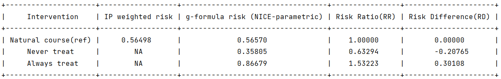

Censoring event
When there are censoring events, the package provides the option to obtain inverse probability weighted (IPW) estimates for comparison with the g-formula estimates. The comparison of these two estimates can be useful to assess model misspecification of the g-formula 1. To get the IPW estimate, the name of the censoring variable in the input data should be specified, users also need to specify a censor model to obtain the weights.
Note that the arguments ‘‘censor_name’’ and ‘‘censor_model’’ are only needed when users want to get the IPW estimate. The package will return the nonparametric observed risk in general cases.
The arguments for censoring events:
Arguments |
Description |
|---|---|
censor_name |
(Optional) A string specifying the name of the censoring variable in obs_data. Only applicable when using inverse probability weights to estimate the natural course means / risk from the observed data. |
censor_model |
(Optional) A string specifying the model statement for the censoring variable. Only applicable when using inverse probability weights to estimate the natural course means / risk from the observed data. |
ipw_cutoff_quantile |
(Optional) Percentile value for truncation of the inverse probability weights. |
ipw_cutoff_value |
(Optional) Absolute value for truncation of the inverse probability weights. |
Users can also specify a percentile value (in the argument ‘‘ipw_cutoff_quantile’’) or an absolute value (in the argument ‘‘ipw_cutoff_value’’) to truncate inverse probability weight.
Sample syntax:
censor_name = 'C'
censor_model = 'C ~ A + L'
g = ParametricGformula(..., censor_name = censor_name, censor_model = censor_model, ...)
Note
When there are categorical covariates (which are assigned a ‘C’ symbol) in the model statement of censoring variable, please name the censoring variable any name except ‘C’ to avoild name confusion.
Running example [code]:
import numpy as np
import pygformula
from pygformula import ParametricGformula
from pygformula.parametric_gformula.interventions import static
from pygformula.data import load_censor_data
obs_data = load_censor_data()
time_name = 't0'
id = 'id'
covnames = ['L', 'A']
covtypes = ['binary', 'normal']
covmodels = ['L ~ lag1_L + t0',
'A ~ lag1_A + L + t0']
outcome_name = 'Y'
ymodel = 'Y ~ A + L'
censor_name = 'C'
censor_model = 'C ~ A + L'
time_points = np.max(np.unique(obs_data[time_name])) + 1
int_descript = ['Never treat', 'Always treat']
g = ParametricGformula(obs_data = obs_data, id = id, time_name=time_name,
time_points = time_points,
int_descript=int_descript,
Intervention1_A = [static, np.zeros(time_points)],
Intervention2_A = [static, np.ones(time_points)],
censor_name= censor_name, censor_model=censor_model,
covnames = covnames, covtypes = covtypes, covmodels = covmodels,
outcome_name=outcome_name, ymodel=ymodel, outcome_type='survival')
g.fit()
Output:

- 1
Yu-Han Chiu, Lan Wen, Sean McGrath, Roger Logan, Issa J Dahabreh, and Miguel A Hernán. 2022. Evaluating model specification when using the parametric g-formula in the presence of censoring. American Journal of Epidemiology.